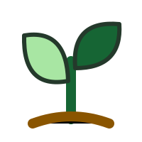
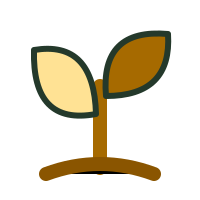
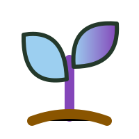
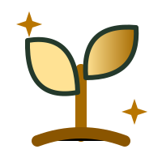

10 · Make it yours
Earn a little Pollen.
Choose your style.
See my journey›Pollen & avatars›Make it yours
Pollen is game currency for avatar styles.
1. Our first signed-in visit
5 discovery + 20 quest + 5 check-in = 30 Pollen in our example.
2. Pick an avatar
Open Pollen & avatars, then choose Buy or Equip.
3. Keep points in perspective
Spending does not lower your level or measure biodiversity.
Example · 30 Pollen available
Make it yours

Sprout
Basic · 0 Pollen
Equipped

Sunshine
Basic · 25 Pollen
Buy

Meadow
Rare · 60 Pollen
Earn 30 more Pollen to unlock
Buy

Pollen guardian
Mythical · 120 Pollen
Earn 90 more Pollen to unlock
Buy
MeetConnectReturnCare
Study guide · practice here is not saved in the app
Try it in Plantopedia
Journey → Pollen & avatars → Quests & avatar → Make it yours
- Read your balance, then look at a style’s Pollen price.
- Use Buy when you have enough; use Equip for an owned style.
- Distinguish Pollen you can spend from XP and level.
If you have 25 Pollen and buy Sunshine, what changes?
Your balance becomes 0 and Sunshine is equipped. Your XP and level do not decrease. Game points do not measure ecological impact.